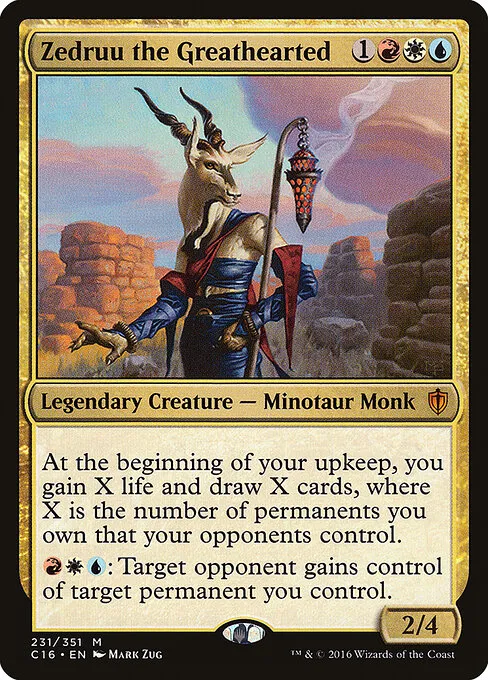
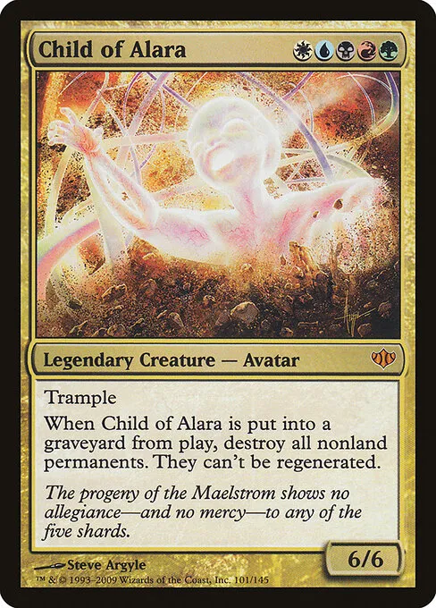
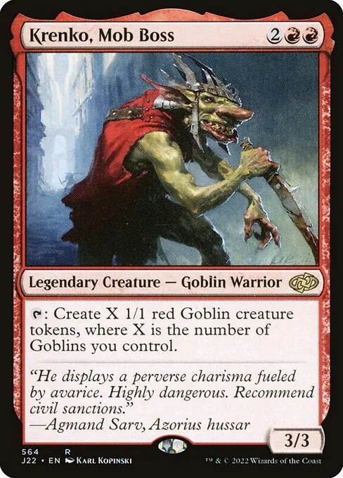
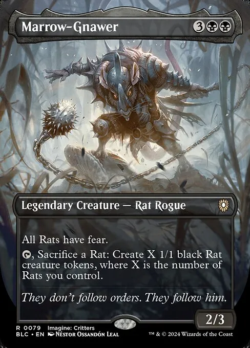
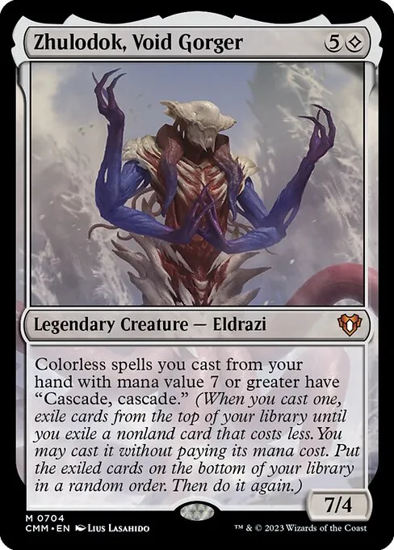
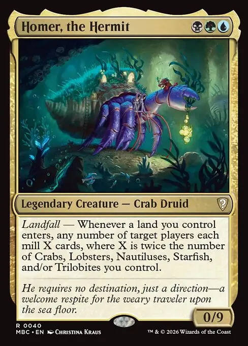

My Magic: The Gathering Commander Decks
This is a collection of commanders I typically use and enjoy playing in MTG. Each commander will have a description of the deck's playstyle and why I like to play it. I will also include an image of the commander.

Zedruu the Greathearted
Jeskai Bracket 4
This deck is my most recent Commander deck, I built it around cards like the new kobayashi maru scenario. Zedruu allows me to give other players permanents that I control, such as the scenario, which will make them lose the game if they choose the 4th option on its ability. There are also other cards that negatively effect other players in the deck that can be given with Zedruu.

Child of Alara
5-Color (WUBRG) Bracket 2
This deck is a deck built around the commander Child of Alara, which has the ability to wipe the board every time it dies. The gimmick of this deck is that its built around lands, which do not get wiped when the commander dies, while other players lose everything. The deck consists of 99 lands and 1 commander. While it is not very good, it is fun to play when it works.

Krenko, Mob Boss
Mono-Red Bracket 4
This is one of the first decks that I used, it functions by creating a lot of goblin token creatures and overwhelming the other players with their numbers. The commander doubles the number of goblins every turn and there are other cards in the deck that buff the goblins with effects like haste, and can even give them unblockable.

Marrow-Gnawer
Mono-Black Bracket 4
This deck is built around the rat colony cards, which are one of the only cards you can have more than one of in your deck. The commander gives the rats fear, which makes them unblockable by every color except black. The deck is similar to krenko as it adds a lot of rats, but it has more utility with graveyard recursion.

Zhulodok, Void Gorger
Colorless Bracket 4
This deck uses Eldrazi creatures, which have no color and are typically very expensive and powerful. Almost all of the creatures in this deck are above 7 power, which allows Zhulodok to add 2 more Eldrazis for every Eldrazi that I play.

Homer the Hermit
Sultai Bracket 4
This deck is built around milling cards, Homer has the ability to mill many cards based off of the number of sea creatures I control. There are a few cards in the deck to create duplicates of Homer, resulting in opponents milling high numbers of cards every time I play a land. There are also sorceries to play lands from the graveyard, ensuring every turn gets use out of the commander.